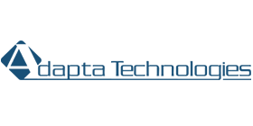
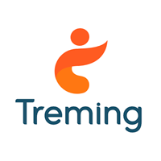
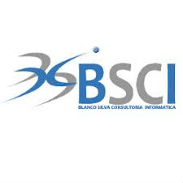

Empresas nacionales
surgió en el año de 1996, como una empresa enfocada a la prestación de servicios profesionales en desarrollo de software y soporte de aplicaciones en diversas escalas. La experiencia que poseemos en diversos campos y plataformas, nos permite cubrir las necesidades tecnológicas de nuestros clientes como nuestro principal compromiso. Nuestro equipo de trabajo es multi-disciplinario y está conformado por analistas-programadores, arquitectos de sistemas, DBAs, gestores de proyectos y asesores tecnológicos de negocios, entre otros profesionales de TI. Esto nos permite proveer a nuestros clientes, productos y servicios con los más altos estándares de calidad, así como confiabilidad, responsabilidad e innovación competitivos a nivel global.

una empresa dedicada a brindar soluciones tecnológicas integrales, proporcionando servicios de calidad adecuados a nuestros clientes, creando relaciones provechosas y duraderas, viviendo nuestros valores y potenciando el desarrollo de nuestros colaboradores.
• Desarrollo de Software: Nos especializamos en el desarrollo de software a la medida en las areas de: Inventarios, Facturacion, Contabilidad, Finanzas, Recursos Humanos, Servicio al Cliente, Producció y Logistica
• Soporte Técnico: Brindamos soporte técnico garantizado para todas nuestras soluciones.
• Asesoría y Venta de Hardware: Ofrecemos todo el equipo y accesorios de cómputo necesario para la operatividad de su empresa.
• Redes: Diseño e Implementacion de redes informaticas para su empresa
• Capacitaciones: Brindamos capacitaciones sobre nuestras soluciones, asi como en lenguajes de programación Oracle y Java.
• Consultorías: Ofrecemos servicios de consultoria en Diseño de Sistemas y Bases de Datos asi como Documentación, Análisis y Rediseño de Procesos Operativos
• Treming es una empresa Salvadoreña que nace en el 2010, para responder a las necesidades de las empresas que querían obtener un tipo de servicio diferente. Un servicio basado en el pleno compromiso y logro de sus objetivos. Actualmente contamos con tres líneas de negocios:
Soluciones de Recursos Humanos: Nos especializamos en ofrecer los siguientes servicios: Procesos de reclutamiento y selección de personal, Elaboración de pruebas psicometricas, Estudios de clima laboral, Administración de planilla, Outplacement de personal.
• Soluciones de IT: Nos especializamos en ofrecer los siguientes servicios: Desarrollo de software a la medida, Outsourcing de personal IT, Software Factory en: ABAP, .NET y JAVA.
• Soluciones de educación: En esta línea nos encargamos de proporcionar diferentes seminarios y cursos libres en todas las áreas.
aliados estratégicos de nuestros clientes, creando un impacto positivo que genere una visión de calidad y excelencia que trascienda a nivel organizacional. Siendo agentes de cambio, visualizando necesidades y oportunidades de mejora para las empresas a través de una actitud positiva y creativa, así como un sentido de innovación, compromiso y excelencia.
•Puede contar con nosotros en las áreas de:
•Automatización de procesos
•Consultoría en procesos de desarrollo de software
•Entrenamientos - Talleres
•Servicios de Tercerización 